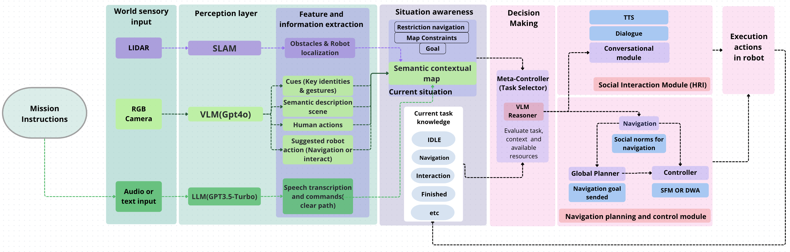
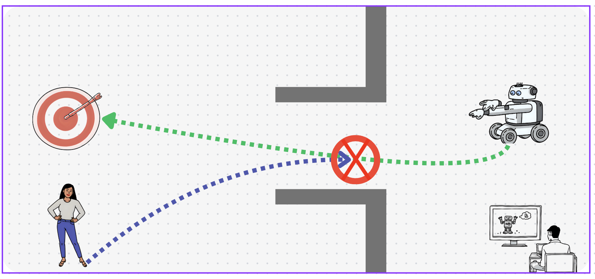
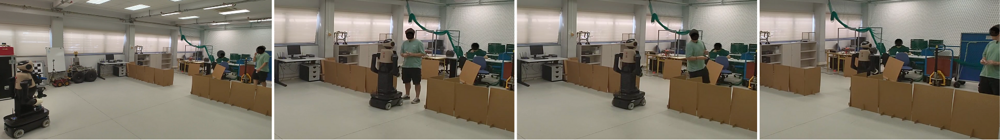
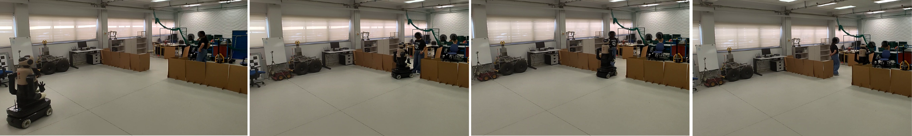
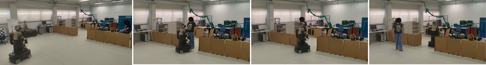
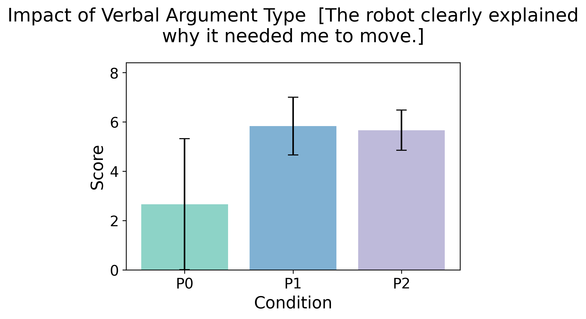
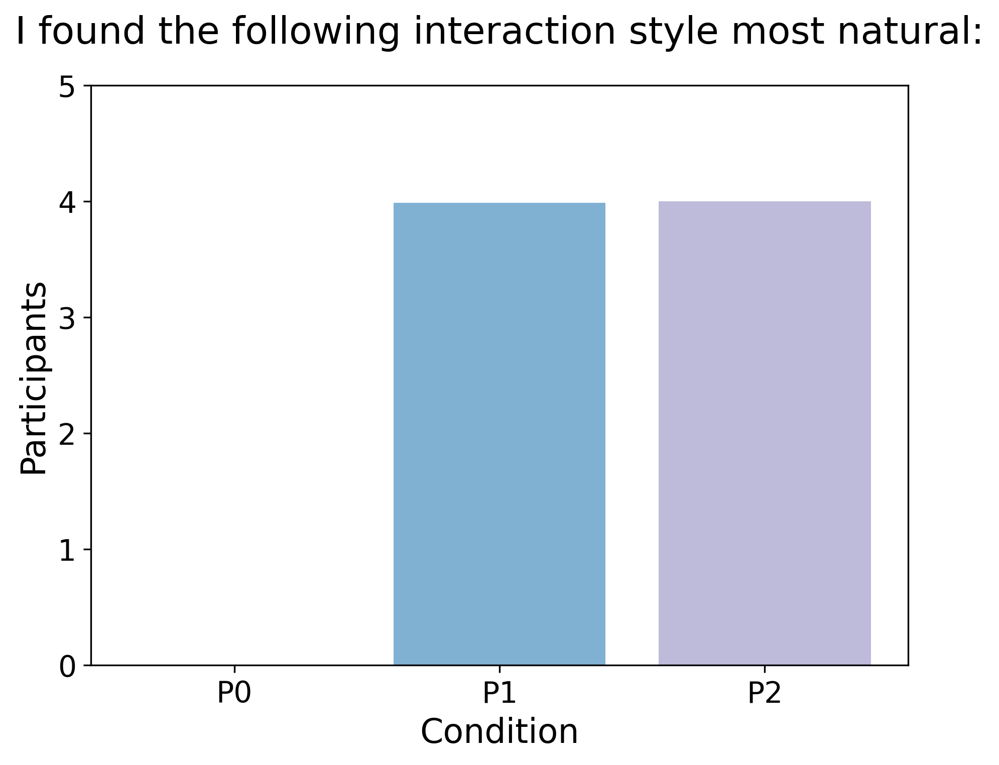
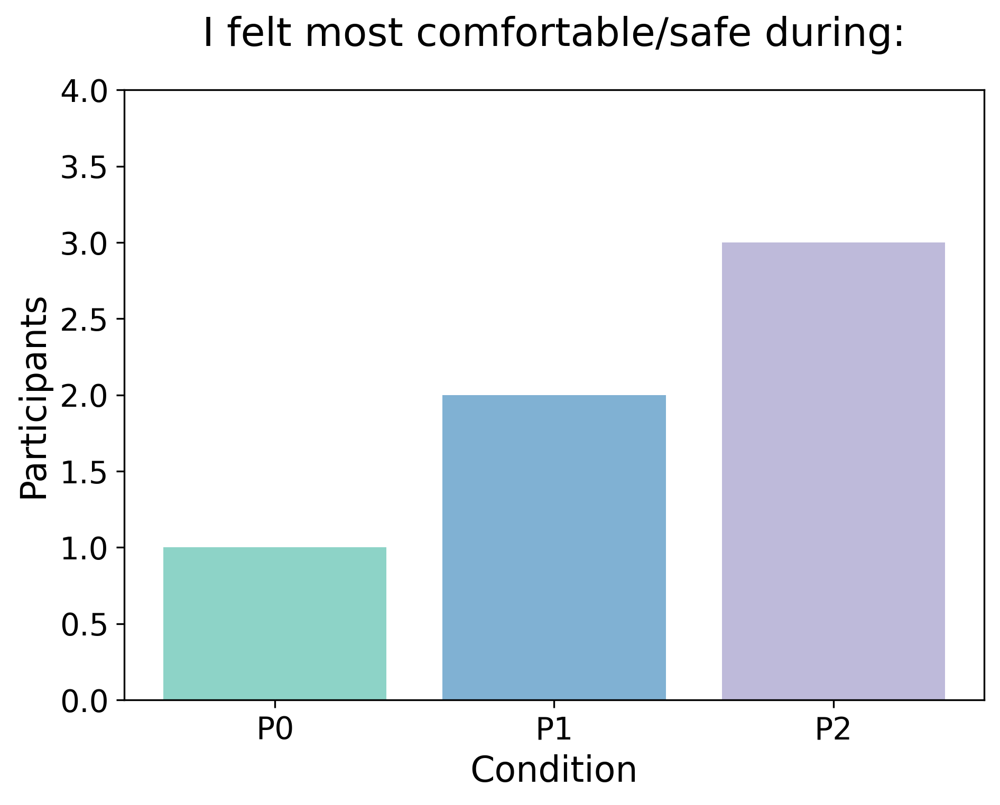
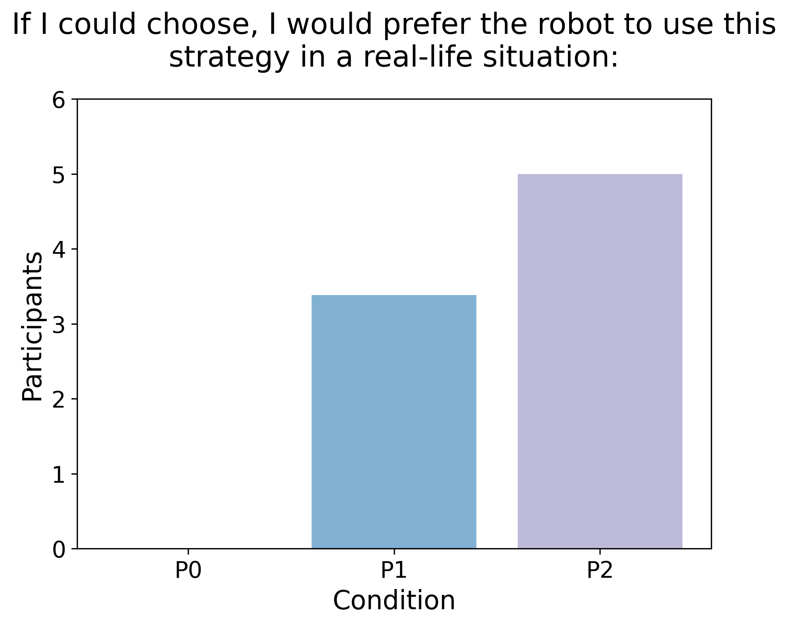

Perception–Awareness–Decision: Socially-Aware Robot Navigation and Interaction
Abstract
Robots working in spaces shared by people need more than geometric mapping: they must recognise people, understand social context, and decide whether to proceed or negotiate passage. We introduce a Perception–Awareness–Decision (PAD) framework that combines SLAM with vision–language models (VLMs), speech recognition and large language models (LLMs) through an explicit situational-awareness representation.
In a corridor-blocking task, PAD improves task success and safety margins, and participants judged its behaviour more socially appropriate than a geometric baseline.
Framework

PAD separates the problem into three layers, so the robot can switch between safe replanning and context-grounded dialogue when navigation depends on human cooperation:
- Perception: LiDAR/SLAM fused with VLM scene descriptions and speech transcription.
- Awareness: a semantic contextual map of obstacles, people, actions and navigation constraints.
- Decision: a meta-controller that selects navigation (SFM or DWA) or an LLM-driven conversation.
Three conditions are compared:
Experiment
Each trial starts with the robot (TIAGo++ / IVO) navigating toward a fixed goal. When a participant blocks the corridor, the robot either keeps replanning (P0) or uses PAD to start a context-grounded dialogue and then continues to the goal (P1/P2). 8 participants took part.




Results
Both PAD conditions reached perfect success and larger safety margins than the SLAM-only baseline. P1 finished faster with fewer but longer turns. P2 used more turns with shorter messages.
| Metric | P0 (SLAM-only) | P1 (Conservative) | P2 (Assertive) |
|---|---|---|---|
| Success rate | 2/8 | 8/8 | 8/8 |
| Re-planning attempts (avg.) | 7.25 | 4.71 | 4.29 |
| Stopping distance (m, avg.) | 0.70 | 0.83 | 0.79 |
| Trial duration (s, avg.) | 105.94 | 99.95 | 162.21 |
| Dialogue turns (avg.) | — | 3.4 | 6.2 |
| Tokens per turn (avg.) | — | 35.45 | 21.36 |
Values from Table 1 of the paper.




Citation
If you use PAD or build on this work, please cite:
@inproceedings{bejarano2026pad,
title = {Perception--Awareness--Decision: Socially-Aware Robot Navigation and Interaction},
author = {Bejarano Sepulveda, Edison Jair and Bo, Valerio and Sanfeliu, Alberto and Garrell, Ana{\'i}s},
booktitle = {Companion Proceedings of the 21st ACM/IEEE International Conference on Human-Robot Interaction},
series = {HRI '26},
pages = {258--262},
publisher = {ACM},
year = {2026},
doi = {10.1145/3776734.3794394}
}